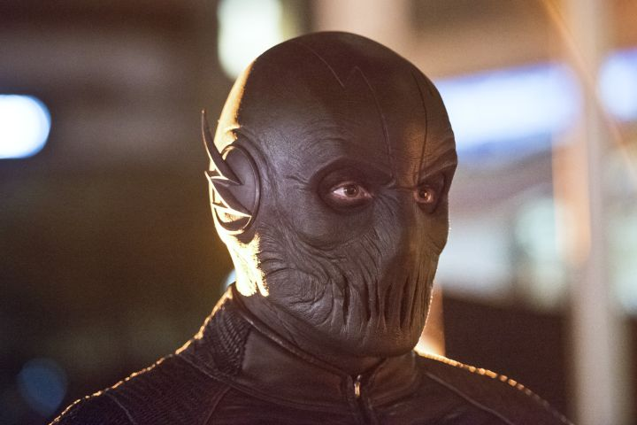

Flash S02|E06 Enter Zoom
“Enter Zoom” opened with a flash-forward to the big rematch between Barry and Doctor Light. Even if the teaser for this week’s episode hadn’t already spelled out the entire plot, it was pretty obvious what was actually going on.
This episode was great about slowly building tension in the lead-up to the Zoom confrontation while still keeping things light and breezy. Much of the fun came from Team Flash’s attempt to groom Linda to take the place of her evil doppelganger. The warehouse scene where she tested her new “powers” easily ranks among the funniest sequences in the show’s history. The cardboard cutouts alone were pretty darned hilarious (especially Cisco’s incredibly dorky poses). It was also great to see the show making good on its potential as far as making Linda a more prominent and vital member of the cast. She was a bit of a throwaway character in Season 1, but not any longer.
That humor extended to the actual “battle between Barry and Linda. If the opening scene wasn’t as dramatic as it might have been, it was still entertaining to see the fight play out in a completely different context. Linda and Barry were basically mucking it up for a nonexistent camera and exchanging terrible hero vs. villain one-liners. Cisco’s exasperation at their terrible banter was just icing on the cake. Yet despite the humorous approach to this battle, there was still a palpable tension in the air as everyone waited for a villain who just didn’t seem interested in taking the bait.Despite the comic elements at play this week, there were some other moments of drama leading up to the big showdown. Viewers were offered more insight into Barry’s psychology and what fuels his desperation to confront Zoom. I liked how this episode tied back to the season premiere as it referenced Wells’ video message. Barry is afraid that Wells was right, and that he’ll never truly be happy even after having avenged his mother and saved his father. With that in mind, it was great to see him make a conscious decision to reject Wells’ statement and embrace his budding romance with Patty. Grant Gustin and Shantel VanSanten have a terrific dynamic going, and one that’s no longer defined simply by their mutual quirkiness. This show thrives on the fact that the actors are able to make the various character relationships feel so warm and genuine.

All this buildup was great, but the episode wouldn’t have been complete without some actual face time for Zoom. It certainly delivered on that front. Clearly our heroes underestimated the villain if they thought he was going to blindly waltz through the wormhole into their trap. If we learned anything about Zoom this week, it’s that he’s as cunning as he is fast. Also, he’s pretty darned terrifying. Credit that as much to Tony Todd’s voice work as anything. Todd’s gravelly rasp is creepily inhuman. And if this Zoom is anything like his comic book counterpart, you can easily believe he’s a person thrown out of sync with time simply by the distorted pitch of his voice.
The showdown between Barry and Zoom played out fairly similarly to Barry’s first encounter with Reverse-Flash last season. Only this time, the outcome was even worse for our hero. Barry put up a valiant fight, but it quickly became apparent that all of Joe’s fears were warranted. His speed seems to be on a completely different order of magnitude from Barry’s (as shown by that cool shot of Zoom catching the lightning bolt and sending it right back). After a while, it was pretty much like watching Bane pound the stuffing out of Batman. Heck, he even left Barry paralyzed. This fight served as a painful lesson for everyone about underestimating Zoom, and it looks like Barry has a long road ahead of him before he can properly confront his new foe again.
Next weeks episode preview: